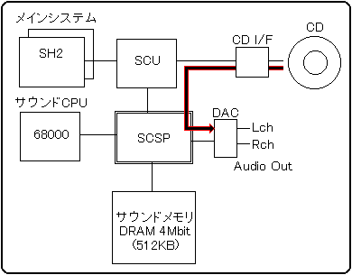
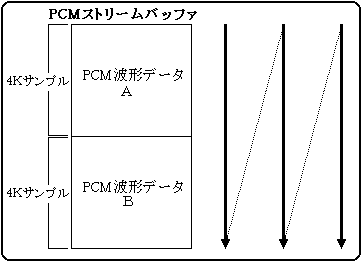
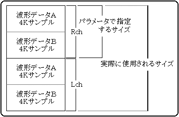
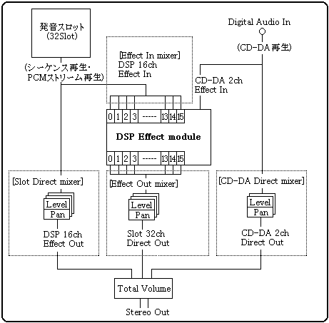

曲、効果音の一時停止
- P1
- 発音管理番号(0-7)
一覧▲▼
- ●03H PAUSE
- 曲、効果音の一時停止
- P1
- 発音管理番号(0-7)
一覧▲▼
- ●04H PAUSE OFF
- 曲、効果音の一時停止を解除
- P1
- 発音管理番号(0-7)
一覧▲▼
- ●05H SEQUENCE VOLUME
- 音量調整またはフェードイン／アウト
- P1
- 発音管理番号(0-7)
- P2
- 音量 (0-255) 128を中心に値が大きいほど音量が大きくなります。以前は127がデフォルトで、音量は小さくすることしかできませんでしたが、Ver-2.00以降ではサンプリングされたときの音量よりも大きくすることができます。ただし、極端に大きな値をセットすると歪むことがありますから、注意が必要です。
- P3
- フェードレート(0-255)現在のシーケンスボリュームから指定のシーケンスボリュームまで達する時間をレート(0から255)で指定します。値が大きいほど変化が遅く255で最長、1で最短となります。（0の場合はフェードはせずにシーケンスボリュームの設定のみとなります）フェードは現在のシーケンスボリュームから、指定のシーケンスボリュームに向かって行われます。指定のシーケンスボリュームが現在のシーケンボリュームより大きいか小さいかでフェードインかフェードアウトかが決まります。
一覧▲▼
- ●06H STOP ALL
- すべての演奏停止
-
- パラメータ無し
一覧▲▼
- ●07H TEMPO CHANGE
- 曲、効果音のテンポを変える
- P1
- 発音管理番号(0-7)
- P2
- dummy（P3,P4を偶数アドレスに配置するために存在）
- P3-P4
- テンポ値(+32767 --> -32768) 基準テンポ値(0000h)に対する相対テンポ値です。1000h(4096)ごとに2倍のテンポ、マイナス時には2分の1のテンポになります。言い換えれば、テンポが2倍（または2分の1）になるまでの間を、4096段階の精度でコントロールできるということになります。0が基準テンポですので、0000hを指定することでいつでも元のテンポに戻ることができます。
一覧▲▼
- ●08H MAP CHANGE
- マップチェンジを行なう
- P1
- エリアマップ番号(0-255) サウンドエリアマップ内の、先頭から何番目のエリアマップかを指定するシーケンシャルなエリアマップ番号です。
ゲーム中には数多くの場面があり、エリアマップも通常はそれぞれ異なります。従ってシーケンスを再生する前には、必ずエリアマップを指定しなければなりません。サウンドエリアマップの中から希望のエリアマップを選択して、マップチェンジを行ってください。マップチェンジが終わった後でそのマップに従ったサウンドデータの転送を行います。これでシーケンス再生の準備が完了です。
マップチェンジは、まずサウンドドライバの起動後に必ず一度は行ってください。以後、エリアマップが変わるたびに毎回必ず行わなければなりません。マップチェンジは下記の1から6の手順で行ってください。
マップチェンジの方法
| 順番 | 処理内容 | 説明 |
|---|
| 1 | 全ての発音を停止させる | 「Sound Initial (10h)」コマンドを発行する。
パラメータで、全ての発音停止、全ての初期化を指定します。 |
| 2 | エリアマップを切り替える | 「Map Change (08h)」コマンドを発行する。
パラメータで、切り替えたいエリアマップの番号を指定します。 |
| 3 | サウンドデータを転送する | サウンドデータをSHアドレスの 25A0B000 番地からへ転送する。
サウンドデータを複数ファイルに分割して持っているような場合には、それぞれのデータをエリアマップに従って転送します。 |
| 4 | 転送完了を通知する | サウンドエリアマップ CRNT ワーク(SHアドレスの 25A00500hから) の転送済みビットを、転送が終わった分だけ全て"1"にする。 |
| 5 | DSPをセットする | 必要があれば「Effect Change (83h)」コマンドを発行する。 |
| 6 | ミキサをセットする | 「Mixer Change (87h)」コマンドを発行する。
DSPを使用していなくても必ずミキサはセットしてください。 |
マップチェンジが終わっていれば、いつでもシーケンスの再生を行うことができます。シーケンスの再生は、シーケンス再生をコントロールするサウンドコントロールコマンド（シーケンススタート、シーケンスストップ、等）を発行してください。
注意１：まだ音が鳴っている途中でエリアマップを切り替えたり、使用中のサウンドデータを入れ替えたりするとシステムが暴走する場合があります。
注意２：DSPワークRAMはDSPの内部処理に使われていますので、DSPが動作中はDSPによって本領域の内容は常に書き換えられています。DSPワークRAMのサイズやアドレスが変わるようなエリアマップの変更時には注意が必要です。DSPが動いていると、直前までDSPワークRAMとして使っていた場所に転送したサウンドデータは破壊されます。
一覧▲▼
- ●09H DIRECT MIDI CONTROL
- ＭＩＤＩイベントをコマンドとして送る
- P1
- MIDI command word (00h-FFh)
- P2
- MIDI channel word (00h-FFh)
- P3
- MIDI data 1 (00h-7Fh)
- P4
- MIDI data 2 (00h-7Fh)
サウンドドライバはMIDIメッセージで発音する音源ですから、シーケンスデータを作成することなく直接MIDIメッセージを与えることで発音させることもできます。本コマンドはそのためのインターフェースで、サウンドドライバに与えるメッセージブロックをパラメータとして持ちます。
メッセージブロックは、MIDIメッセージに発音開始時のパラメータを付加した4バイトのデータブロックで下図のような構成になっています。
| ７ | ６ | ５ | ４ | ３ | ２ | １ | ０ |
|---|
| 0 | Priority level | CMD |
|---|
| 1 | KNo | MIDI Ch |
|---|
| 2 | MIDI Data #1 |
|---|
| 3 | MIDI Data #2 |
|---|
| Priority level | 0-31 | Sequence Start時の発音優先順位 |
| CMD | 0-7 | MIDI command |
| KNo | 0-7 | 発音管理番号 |
| MIDII Ch | 0-31 | MIDI channel |
| MIDI data #1 | 0-127 | MIDI data byte #1 |
| MIDI data #2 | 0-127 | MIDI data byte #2 |
実際のMIDI Eventとの対応
| CMDの値 | 対応するMIDI Event |
| 0 | (80h-8Fh) Note Off Event |
| 1 | (90h-9Fh) Note On Event |
| 2 | (A0h-AFh) After Touch |
| 3 | (B0h-BFh) Control Change |
| 4 | (C0h-CFh) Program Change |
| 5 | (D0h-DFh) Channel Pressure |
| 6 | (E0h-EFh) Pitch Wheel |
| 7 | (F0h-FFh) System Massage |
メッセージブロック4バイトをそのままパラメータの P1,P2,P3,P4 として「MIDIダイレクトコントロール(09h)」コマンドを発行します。但し下記のような長所・短所がありますので、サウンドクリエータと良く相談した上でよりよい方法を選択してください。
長所
- シーケンスデータにあらかじめ持てないようなリアルタイムなコントロールが可能。
- シーケンスの作成から圧縮等、データ作成の作業がいらない。
- 圧縮・解凍の処理を省けるので付加がかからない。
短所
- 何でもできる代わりに、場合によってはかなりの内容を理解した上で高度なプログラムを組まなければなりません。（MIDIのチャンネルと対応する音色、DSPプログラムとミキサーの仕様等の関係がわかっていないと正しく利用できませんので、サウンドクリエータとのすりあわせが必要です）
一覧▲▼
- ●0AH START VOLUME ANALYZER
- Digital Audio Inの入力レベル解析開始
- パラメータなし
一覧▲▼
- ●0BH STOP VOLUME ANALYZER
- Digital Audio Inの入力レベル解析終了
- パラメータなし
一覧▲▼
- ●0CH DSP STOP
- DSPの停止、初期化
- パラメータなし
一覧▲▼
- ●0DH ALL NOTE OFF
- 全発音停止
- パラメータなし
註：緊急事態用ですので通常は使用しないでください。
一覧▲▼
- ●0EH SEQUENCE PAN
- ゲーム上からPANPOTをコントロールする
- P1
- 発音管理番号 (0-7)
- P2
- 第７ビットがスイッチとなっています。シーケンスPANのコントロールを行うか、行わないかを指示するビットです。0 でシーケンスPANのコントロールを行います。1 ならコントロールは行いません。ビット６から０はMIDIが取りうるPANデータの値です（0〜7FH）
MIDI PANデータの詳細（SCSPのPANとの対応）
| MIDI PAN | 0 | 1 | 2 | 3 | 4 | 5 | 6 | 7 | 8 | 9 | A | B | C | D | E | F |
| 00h - 0Fh | 1Fh | 1Fh | 1Fh | 1Fh | 1Eh | 1Eh | 1Eh | 1Eh | 1Dh | 1Dh | 1Dh | 1Dh | 1Ch | 1Ch | 1Ch | 1Ch |
| 10h - 1Fh | 1Bh | 1Bh | 1Bh | 1Bh | 1Ah | 1Ah | 1Ah | 1Ah | 19h | 19h | 19h | 19h | 18h | 18h | 18h | 18h |
| 20h - 2Fh | 17h | 17h | 17h | 17h | 16h | 16h | 16h | 16h | 15h | 15h | 15h | 15h | 14h | 14h | 14h | 14h |
| 30h - 3Fh | 13h | 13h | 13h | 13h | 12h | 12h | 12h | 12h | 11h | 11h | 11h | 11h | 10h | 10h | 10h | 10h |
| 40h - 4Fh | 00h | 00h | 00h | 00h | 01h | 01h | 01h | 01h | 02h | 02h | 02h | 02h | 03h | 03h | 03h | 03h |
| 50h - 5Fh | 04h | 04h | 04h | 04h | 05h | 05h | 05h | 05h | 06h | 06h | 06h | 06h | 07h | 07h | 07h | 07h |
| 60h - 6Fh | 08h | 08h | 08h | 08h | 09h | 09h | 09h | 09h | 0Ah | 0Ah | 0Ah | 0Ah | 0Bh | 0Bh | 0Bh | 0Bh |
| 70h - 7Fh | 0Ch | 0Ch | 0Ch | 0Ch | 0Dh | 0Dh | 0Dh | 0Dh | 0Eh | 0Eh | 0Eh | 0Eh | 0Fh | 0Fh | 0Fh | 0Fh |
○ 表内の値がSCSPのPANデータ（00h-1Fh:32段階）です。
○ MIDI PANデータは128段階ですので、SCSPのPANデータに変換する際に下位2ビットは無視されます。
Left Center Right
00h ←−−−−−−−→ 40h ←−−−−−−−→ 7Fh
|
SCSP PANとMIDI PANの対応表
| PAN | L (db) | R (db) | 定位 | | PAN | L (db) | R (db) | 定位 |
| 00h | -00.0 | -00.0 | C | | 10h | -00.0 | -00.0 | C |
| 01h | -03.0 | -00.0 | R1 | | 11h | -00.0 | -03.0 | L1 |
| 02h | -06.0 | -00.0 | R2 | | 12h | -00.0 | -06.0 | L2 |
| 03h | -09.0 | -00.0 | R3 | | 13h | -00.0 | -09.0 | L3 |
| 04h | -12.0 | -00.0 | R4 | | 14h | -00.0 | -12.0 | L4 |
| 05h | -15.0 | -00.0 | R5 | | 15h | -00.0 | -15.0 | L5 |
| 06h | -18.0 | -00.0 | R6 | | 16h | -00.0 | -18.0 | L6 |
| 07h | -21.0 | -00.0 | R7 | | 17h | -00.0 | -21.0 | L7 |
| 08h | -24.0 | -00.0 | R8 | | 18h | -00.0 | -24.0 | L8 |
| 09h | -27.0 | -00.0 | R9 | | 19h | -00.0 | -27.0 | L9 |
| 0Ah | -30.0 | -00.0 | R10 | | 1Ah | -00.0 | -30.0 | L10 |
| 0Bh | -33.0 | -00.0 | R11 | | 1Bh | -00.0 | -33.0 | L11 |
| 0Ch | -36.0 | -00.0 | R12 | | 1Ch | -00.0 | -36.0 | L12 |
| 0Dh | -39.0 | -00.0 | R13 | | 1Dh | -00.0 | -39.0 | L13 |
| 0Eh | -42.0 | -00.0 | R14 | | 1Eh | -00.0 | -42.0 | L14 |
| 0Fh | - ∞ | -00.0 | R15 | | 1Fh | -00.0 | - ∞ | L15 |
一覧▲▼
- ●10H SOUND INITIALIZE
- サウンドドライバの初期化を行なう
- P1
- 全シーケンス再生の停止 (0-1)
- P2
- 全PCMストリーム再生の停止 (0-1)
- P3
- CD-DA再生の停止 (0-1)
- P4
- DSPの初期化 (0-1)
- P5
- Mixerの初期化 (0-1)
* P1からP5はすべて01hで実行指示です。00hの時は何もしません。
サウンドイニシャル (10h) コマンドのＰ１からＰ５の値は、０１Ｈの時該当処理を実行、それ以外の値の時は無視されます。このコマンドは主にＭＡＰチェンジ発行の直前に設定することを目的としています。
Ｐ１からＰ５の詳細
- Ｐ１の実行指示(01h)により、現在発音中の全てのシーケンスに対してその停止を実行します。これによる他の音（ＰＣＭストリーム再生、ＣＤ−ＤＡ再生）への影響はありません。
- Ｐ２の実行指示(01h)により、現在発音中の全てのＰＣＭストリーム再生に対してその停止を実行します。これによる他の音（シーケンス再生、ＣＤ−ＤＡ再生）への影響はありません。
- Ｐ３の実行指示(01h)により、ＣＤ-ＤＡの入力成分[EXTS0],[EXTS1]に対してそのダイレクト成分である[EFSDL]と[EFPAN]を "00H" にすることによりその出力をＯＦＦします。したがってエフェクトによりＣＤ−ＤＡ入力を加工して出力させている場合はその音量がＯＦＦされることはありません。これによる他の音（シーケンス再生、ＰＣＭストリーム再生）への影響はありません。
-
| Sound address | 100217H.b ← 00H |
| 100237H.b ← 00H |
- Ｐ４の実行指示(01h)により、音源内蔵のＤＳＰ部を初期化します。実際にはＤＳＰレジスタに下記のデータを設定し、エフェクト成分の出力をＯＦＦすると共に、ＤＳＰがＤ−ＲＡＭへアクセス（Ｒ／Ｗ）することを禁止させます。またこの時ミキサーの初期化も実行されますが復帰させます。これによる他の音（シーケンス再生、ＣＤ−ＤＡ再生、ＰＣＭストリームの各ダイレクト成分）への影響はありません。
-
| [IMXL] | ← 00H |
| [EFSDL],[EFPAN] | ← 00H |
| [MPRO] | ← 00000000H |
| [COEF] | ← 000H |
| [TEMP] | ← 000000H |
- Ｐ５の実行指示(01h)により、ミキサー部である全ての[EFREG]に対して[EFSDL]=[EFPAN]=0を書込み、エフェクト成分を出力しないようにします。これによる他の音（シーケンス再生、ＣＤ−ＤＡ再生、ＰＣＭストリームの各ダイレクト成分）への影響はありません。
一覧▲▼
- ●11H YAMAHA 3D CONTROL
- YAMAHA 3D soundのコントロール
- P1
- 距離(0-127) YAMAHA3Dサウンドの、リスニングポイントから仮想音源までの距離です。
値が0で距離は0で、値が大きくなるほど距離が離れます。
- P2
- 方位 (0-127) YAMAHA3Dサウンドの、リスニングポイントから見た仮想音源の方位です。
値が0で右0度、32で右90度、64で右180度、96で右270度です。
- P3
- 高さ (0-127) YAMAHA3Dサウンドの、リスニングポイントから見た仮想音源の高さです。
値が0で真下、32で目の高さ、64で真上、96で後方の目の高さです。
一覧▲▼
- ●12H QSOUND CONTROL
- Qsound コントロール
- P1
- チャンネル番号(0-7) Qサウンドのコントロールを行うチャンネルの番号です。
最大8チャンネルですので0から7を指定します。
- P2
- PAN Position(0-30) QサウンドのPAN位置の指定です。0で左90度、15で中央、30で右90度の左右15段階です。
一覧▲▼
- ●13H YAMAHA 3D INITIALIZE
- YAMAHA 3D,Qsound 定位の初期化
- パラメータなし
一覧▲▼
- ●14H TEMPO MODE
-
- P1
- テンポモード(0/plus/minus) シーケンス再生中にテンポチェンジをおこなった場合，
従来ではシーケンスループ時に元のテンポに戻されます．
このバージョンでは，それを回避するためにいくつかのテンポモードを用意しました．
- 0：通常モード
- 従来通りのテンポ処理を行います．
- 1 - 127：無視モード
- シーケンス中のテンポ変更を無視します．ホストコマンドのみで
テンポコントロールが可能です．
- 128 - 255：相対テンポモード
- シーケンス中のテンポ変更はすべて効きます．ホスト側はそれに
対する相対値をTEMPO RATIOコマンドにて設定します．ちょうどシーケンスによるテンポの変化を
TEMPO RATIOコマンドによってシフトしたような状態になります．
一覧▲▼
- ●15H TEMPO RATIO
- 相対テンポ値の設定
- P1-P2
- 相対テンポ値(+32767 --> -32768) 基準テンポ値(0000h)に対する相対テンポ値です。1000h(4096)ごとに2倍のテンポ、マイナス時には2分の1のテンポになります。言い換えれば、テンポが2倍（または2分の1）になるまでの間を、4096段階の精度でコントロールできるということになります。0が基準テンポですので、0000hを指定することでいつでも元のテンポに戻ることができます。
一覧▲▼
- ●80H CD-DA LEVEL
- CD-DAのレベルを調整
- P1
- CD-DA Level Left 8段階 (00h-E0h) CD-DAの出力レベルの設定です。00hで最低音量(=Off)、E0hで最大音量の8段階です。
Off ←−−−−−−−−−→ Max
00h,20h,40h,60h,80h,A0h,C0h,E0h |
- P2
- CD-DA Level Right 8段階 (00h-E0h) CD-DAの出力PANの設定です。
8段階の詳細： (off) 00h,20h,40h,60h,80h,A0h,C0h,E0h (MAX)
CD-DA再生は、CDの音声トラックの音声データをハード的に直接出力する方法です。これはテープレコーダーの原理と同じ事で、録音した音声をそのまま再生するものです。CDから読み出された音声データは自動的にSCSPへと流し込まれますので、あとはSCSPのCD-DAレベルを設定するだけで音声の出力が開始します。
CD-DAの流れ

CD-DAの再生は、CDドライブからの音声データ読み出しと、SCSPからの音声出力の設定で行います。
音声データ読み出しは、システムライブラリの「CDCライブラリ」を使用します。下記の2つの関数を呼び出すことで音声データの読み出しを行うことができます。CDCライブラリの詳細は、CDCライブラリのユーザーズマニュアルを参照してください。
SCSPからの音声出力の設定は、サウンドコントロールコマンドの「CD-DA Level (80h)」コマンドと、「CD-DA Pan (81h)」コマンドで行ってください。音声データはCDインターフェースから直接SCSPに転送され、そのまま音声として出力されます。従ってメインシステムはCDインターフェースに対して再生のリクエストを出すだけで、データの読み込みやサウンドメモリへの転送等は一切必要ありません。メインシステムとサウンドシステムにとってもっとも負荷のかからない再生方法ですが、再生中は連続してCD を占有してしまいます。つまり音を出すこと以外にCDのアクセスができなくなってしまいます。但しそれが許されるような場合には、本サウンドシステムにおける最大のクオリティーを実現することが可能となります。
周波数とデータ幅は44.1KHzの16bit固定でCD規格と同等のもので、再生時にピッチやテンポ等の変更をすることができません。同時に、このクオリティーを実現するためには非常に大量な音声データを必要としますので、通常の音楽CDがそうであるように1枚のCDには10曲から20曲程度しか入りません。実際にはゲームプログラムや画像データ等が入りますので、曲としては5-6曲程度しか入りません。
CD-DAのデータはPCMの音声波形データそのものです。従ってCD-DAデータは、録音されたPCM波形データをそのままデータファイルとして持ちます。非常に大きなデータですが、加工や細工の必要がない最もシンプルな音声データです。
CD-DAのデータはSEGAが提供しているサウンドツールの波形エディタや、市販の波形編集ツール等で作成することができます。44.1KHzで16bitステレオのPCMデータが出力できれば、ツールはなんでもかまいません。曲や効果音を直接デジタル録音する方法と、アナログ音声等をデジタルに変換する方法とがあります。モノラルの場合にはLchとRchに同じデータが入ります。
CD-DAデータフォーマット
| Data 1 |
Lch low(8bit) |
|---|
Lch high(8bit) |
Rch low(8bit) |
Rch high(8bit) |
| Data 2 |
Lch low(8bit) |
|---|
Lch high(8bit) |
Rch low(8bit) |
Rch high(8bit) |
:
:
:
:
: |
:
:
:
:
: |
|---|
| Data n |
Lch low(8bit) |
|---|
Lch high(8bit) |
Rch low(8bit) |
Rch high(8bit) |
注意１：各種ツールが出力するPCM波形データは、ツールによって16ビットの Low/High 関係が反対になっている場合があります。一般的にはインテル系CPUでは Low/High 、モトローラ系では High/Low となっていますので、モトローラ系フォーマットの場合にはインテル系フォーマットに変換してください。必要に応じてデータのLow/Highを反対にするようなツールを用意しておくと便利です。
注意２：CD-DAに対してDSP（エフェクト）を使用する場合には、ミキサの設定が必要です。DSPを使用する場合には必要なミキサデータを用意して、「Mixer Change (87h)」のコマンドを発行してください。シーケンス再生がないような場合でも、ミキサ設定のための音色データが必要になります。
一覧▲▼
- ●81H CD-DA PAN
- CD-DA出力Panpotの設定
- P1
- CD-DA PAN Left 32段階 (0-31)
- P2
- CD-DA PAN Right 32段階 (0-31)
一覧▲▼
- ●82H TOTAL VOLUME
- トータルボリュームの設定
- P1
- トータルボリューム 16段階 (0-15) SCSPのトータルボリューム（全ての再生に対する全体的な音量）の設定です。0で最低音量(=Off)、15で最大音量の16段階です。
一覧▲▼
- ●83H EFFECT CHANGE
- エフェクトの切り換え
- P1
- エフェクトバンク番号(0-15) 現在のエリアマップ内にDSPバンク（DSPマイクロプログラムの格納エリア）が複数個ある場合に、先頭から何番目のDSPバンクであるかを指定します。1つのエリアマップには最大16のDSPバンクまでを持てますので、0から15のいずれかの値となります。DSPバンクが1つしかない場合には常に0です。
一覧▲▼
- ●85H START PCM STREAM
- PCMストリーム再生開始
- P1
- bit7
0: mono 1:stereo
- bit6-5
未使用
- bit4
0: 16bitPCM 1: 8bitPCM
- bit3-0
再生開始 PCMストリーム再生番号(0-7) PCMストリーム再生は同時に最大で8ストリームまでを再生できますので、PCMストリームの再生番号を0から7で指定します。ステレオ時には1つの再生番号で、Lch/Rchの２つのストリームを再生しますので注意が必要です。モノラルとステレオの合計として最大8ストリームまでですので、8ストリームを越えるような場合にはコマンドは無視されます。
- P2
- bit7-5
ダイレクト音 出力レベル 8段階 (0-7) ダイレクト音の出力レベル設定です。0で最低音量(=Off)、7で最大音量の8段階です。
- bit4-0
ダイレクト音 出力PAN 32段階 (0-31) ダイレクト音の出力PAN設定です。詳細13ページのSEQUENC PANの項を参照してください。
- P3-P4
- PCMストリームバッファスタートアドレス (0000h-FFFFh) PCMストリームバッファ の先頭アドレスです。20ビットアドレスの上位16bitを指定します。
- P5-P6
- PCMストリームバッファサイズ (0000h-FFFFh) PCMストリームバッファ のサイズです。1ch分のサンプル数ですので、MONO時でもSTEREO時でも16bitでも8bitでも同じ値が入ります。
- P7-P8
- pitch word (0000h-7FFFh) SCSPのピッチレジスタの値(16ビット)をそのまま指定します。
Pitch Word(16bit)の構成
15 | 14 | 13 | 12 | 11 | 10 | ９ | ８ | ７ | ６ | ５ | ４ | ３ | ２ | １ | ０ |
|---|
| 0 | OCT | 0 | FNS |
OCT : オクターブを2 の補数で指定します。-8オクターブから+7オクターブまでが指定できます。
FNS : 基準ピッチ（0）から1オクターブ上（1023）までの間を1024段階で指定します。
ビット15,ビット10は常に0です。
- P9
- bit7-3
エフェクト 入力チャンネル(0-15) 【P9=Rch】 DSPの16ch Effect In の選択です。DSPのエフェクト入力は16チャンネルありますので0から15を指定します。「第６章 補足説明 ６−７ DSPとミキサー」の項に詳細な説明がありますので参照してください。
- bit2-0
エフェクト 入力レベル 8段階(0-7) エフェクト入力チャンネルへ送り込むダイレクト音のレベルを0から7で指定します。0で最低レベル(=Off)、7で最大レベルの8段階です。
- P10
- bit7-3
エフェクト 入力チャンネル(0-15) 【P10=Lch】
- bit2-0
エフェクト 入力レベル 8段階(0-7)
- P11
- トータルレベル 256段階 (max:00h-FFh:min) ストリーム再生に使用しているスロットのトータルレベルです。ダイレクト音 出力レベルよりも細かい音量調節ができます。
PCMストリーム再生は、PCM波形データをループ再生させながら再生が終わった部分に次の波形データを書き込むという処理を連続して行うことにより、長いPCM波形データを再生させる方法です。話し声や長い効果音、録音されたBGM等サウンドメモリに入り切らない長いPCM波形データを再生できます。
現在波形データのどの部分を再生中かを知ることができますので、再生が終わった部分に次の波形データを書き込みます。下図のような場合は、波形データAの再生が終わって波形データBを再生中に、波形データAの部分に次の波形データを書き込みます。この処理を繰り返すことでどんな長い波形データでも連続再生する事ができます。

A,B,A,B,A,B.....と連続してループ再生されます
PCMストリーム再生は下記の手順で行ってください。また、ステレオ時には下記の処理を左チャンネルと右チャンネルの２チャンネル分行う必要があります。
| 順番 | 処理 |
|---|
| 1 | 波形データA、波形データB の領域に最初の波形データを転送します。 |
| 2 | サウンドコントロールコマンドの「PCM start (85h)」コマンドを発行します。 |
| 3 | 波形データAの再生が終わったら、波形データAの領域に次の波形データを転送します。 |
| 4 | 波形データBの再生が終わったら、波形データBの領域に次の波形データを転送します。 |
| 5 | 上記3,4の動作を繰り返します |
| 6 | 終了する場合にはサウンドコントロールコマンドの「PCM stop (86h)」コマンドを発行します。 |
注意：バッファのサイズ・転送の方法・転送のタイミング等はメインシステムの自由ですので、上記の手順にとらわれずに、場面に応じた最適な方法を選択してください。
データエリアの持ち方
PCMストリーム再生を行うためには、PCM波形データを再生させるためのデータエリア（PCMストリームバッファ）が必要です。PCMストリームバッファは、サウンドメモリ上の任意の場所を指定できます。通常は音色データ、曲データ等で使っていない部分を利用しますが、PCMストリーム再生と同時に使用しない音色バンク等があればその領域も使用可能です。
現在の再生位置は4Kサンプル単位で知ることができます。従って最低でも4Kサンプルのバッファを2面持つことでPCMストリーム再生を行うことができます。PCMストリームバッファのサイズは1チャンネルで最大64Kサンプルまで取れますので、この範囲内で自由に設定できます。
バッファ書き換えのタイミング
PCMストリーム再生が開始すると、ホストインターフェースワークに現在の波形再生位置が書き込まれます。再生位置は0から15までの数値で、再生開始時は値が0で、4Kサンプル再生が進むごとに1だけカウントアップします。バッファの最後まで再生が終わるとまたバッファの先頭から再生を繰り返しますので、この時点で再生位置の値は0に戻ります。
| バッファの持ち方の例 | 再生位置の値 |
| 4Kサンプルのバッファを2面もった場合 | 0, 1, 0, 1, 0, 1 ... |
| 4Kサンプルのバッファを3面もった場合 | 0, 1, 2, 0, 1, 2, 0, 1, 2 ... |
| 4Kサンプルのバッファを16面もった場合 | 0, 1, 2, 3 - - - - 12, 13, 14, 15, 0, 1, 2, 3 ... |
メインシステムはこの再生位置を監視して次の波形データを転送してください。PCMストリームバッファは最大64Kサンプルまで取れますから、最低2面から最大16面までの範囲で選択が可能です。
また、再生位置が更新されたタイミングでメインシステムに対して割り込みを発生させることも可能ですので、必要な場合にはこれを利用してください。システムインターフェースワークに本割り込みのコントロール情報がありますので、設定内容は「７システムインターフェースワーク」の項を参照してください。
転送時の負荷
PCM再生スロットはハード的に44.1KHz固定ですので、再生開始から22.68usecごとに１サンプルを再生します。言い換えれば再生開始後は、1チャンネルにつき1秒間に44,100サンプル分の波形データを補給し続けなけなりません。8ビットPCMなら44,100バイト、16ビットPCMなら88,200バイトとなります。
CDからの読み出しとサウンドメモリへの転送を含めて、この転送にかかる時間がメインシステムの負荷と言うことになります。転送時間はメインシステムのハードウェアに依存しますので、CDの回転待ち、シーク時間、SH（またはDMA）の転送クロックと転送バイト数で計算できます。
但し、上記のバイト数は44.1KHz時のデータ量ですので、例えば半分の22KHzで良いような場合にはデータ量はその半分で済みますので、転送の負荷も半分になります。逆にステレオ再生や複数チャンネルを同時に再生する場合にはその分だけ負荷は重くなります。
ステレオ再生
PCMストリーム再生はステレオ再生を行うことができます。ステレオ再生の場合は下記のようにモノラル時の2倍のメモリを使いますので注意が必要です。再生開始のコマンドパラメータで指定するバッファサイズは1チャンネル分のサンプル数ですので、実際はその2倍のエリアを用意してください。

44.1KHz以外の再生周波数への対応
SCSPはいつでも44.1KHzの周波数で波形データを再生しますので、これ以外の周波数の波形データを再生する場合にはピッチのパラメータで対応します。例えば半分の22KHzのものを再生する場合はそのままでは2倍のピッチで再生されてしまいますので再生ピッチを半分にして再生するともとのピッチで再生されます。
ピッチは±8オクターブ(OCT)までの範囲で、さらに1オクターブの中を1024段階(FNS)まで分割できますので、この精度の範囲内でどんな周波数にでも対応可能ですが、実際には、そう変則的な設定は行なわれませんので、対応表に記します。
| サンプリングレート | OCT | FNS | 設定値 |
| 44.1kHz | 00 | 0000 | 0000 |
| 32kHz | 0F | 01CE | 79CE |
| 22kHz | 0F | 0000 | 7800 |
| 16kHz | 0E | 01CE | 71CE |
| 11kHz | 0E | 0000 | 7000 |
| 8kHz | 0D | 01CE | 69CE |
| 5.5kHz | 0D | 0000 | 6800 |
| 4kHz | 0C | 01CE | 61CE |
- 連続転送時の注意
波形データの転送時は長時間の連続転送をさけてサウンドCPUが動作できるようにしてください。メインシステムがサウンドメモリをアクセスしている間はこちらが優先され、サウンドCPUは動作できませんので注意が必要です。連続転送が必要な場合には、最大でも1msec程度の転送に分割して行ってください。間をあけることによってサウンドCPUが動作可能となります。
- DSP使用時の注意
PCMストリーム再生にDSP（エフェクト）を使用する場合にはミキサの設定が必要です。DSPを使用する場合には必要なミキサデータを用意して、ミキサ設定のコマンドを発行してください。シーケンス再生がないような場合でも、ミキサ設定のための音色データが必要になります。
備考：1サンプルとはPCM波形データの最小単位データのことで、そのサイズはデータ幅に依存します。8ビットの場合は1バイトで、16ビットの場合は2バイトです。従って、4Kサンプルといった場合には8ビットPCMの場合には4096バイトで、16ビットPCMの場合には8192バイトとなります。
PCMストリーム再生は機能的は８本まで可能となっていますが、現実的には処理能力の関係上、不可能といえます。ストリーム再生はサウンドCPU単体で稼働するものではありませんから、ゲームの処理スピードを考慮して、開発の初期段階から実験を重ねることをすすめます。ポリゴンによる演算にSH2を酷使しているようなゲームではフレームオーバーを引き起こす原因となる可能性がありますから特に注意してください。
一覧▲▼
- ●86H STOP PCM STREAM
- PCMストリーム再生停止
- P1
- 再生停止 PCMストリーム再生番号 (0-7)
一覧▲▼
- ●87H MIXER CHANGE
- ミキサの切り換え
- P1
- 音色データ バンク番号 (0-15) 現在のエリアマップ内に音色バンク（音色データの格納エリア）が複数個ある場合に、それらを区別するための番号です。1つのエリアマップには最大16音色バンクまで持てますので、0から15のいずれかの値となります。（5-1-4 サウンドエリアマップCRNTワーク マップ情報 参照）。
- P2
- 音色データ内 ミキサ番号 (0-127) ひとつの音色データ内には複数のミキサデータを格納することができますので、音色データ内の先頭から何番目のミキサデータであるかを指定します。1つの音色データには最大で128ミキサまでを格納できますので、0から127のいずれかの値となります。ミキサデータが1つしかない場合には常に0です。
ミキサとは
ミキサは、SCSP音源の音量（ボリューム）と定位（左右への振り分け）のバランスをとるためのハードウェアです。音源自体は発音スロットとデジタルオーディオ入力の2種類だけですが、それぞれDSPを通すことができますので、ミキサは下記の4種類のミキサブロックに分けて考えることができます。
ミキサーの構成

- Slot Direct ミキサ
- ： 発音スロットからのダイレクト（DSPを通さない）出力レベルとPAN
- CD-DA Direct ミキサ
- ： CD-DAからのダイレクト（DSPを通さない）出力レベルとPAN
- Effect In ミキサ
- ： DSPへの入力レベル
- Effect Out ミキサ
- ： DSPからのエフェクト（DSPを通した）出力レベルとPAN
この中で「Slot Direct ミキサ」と「Effect In ミキサ」はすでに音色データ中で設定済みですので、特別にコントロールする必要はありません。また、「CD-DA Direct ミキサ」に関しては、専用の「CD-DA Level (80h)」・「CD-DA Pan (81h)」コマンドが用意してありますので、そちらでコントロールします。
従って、本マニュアルで「ミキサ」と言えば、特別に上記の「Effect Out ミキサ」のことを意味します。本マニュアルで言うミキサとは、「DSPから出力される、16chのエフェクトレベルとPANの設定」のことです。
DSPとミキサ
ミキサはDSPからの音の出口の設定です。従って、エフェクト処理が正常に動作してエフェクトが正しくかかっていても、正しいミキサを設定していないとエフェクト音は出力されません。ミキサはDSPの出力チャンネル16ch分の音量と定位を設定したデータで、音色データの一部としてサウンドクリエーターが作成します。
また、DSPにはシーケンス再生・PCMストリーム再生・CD-DA再生の全ての音が入ってきますので、どの場面ではどのチャンネルに何の音が入ってきてどのチャンネルから出ていくかを正しく把握した上でコントロールしなければなりません。エフェクトの切り替えを行う場合には、対応するミキサはどれであるか、ミキサの仕様はどうなっているかを事前に確認しておきます。
なお、MIDIのコントロールチェンジを使ってミキサの設定を行なう場合には、バンクセレクトができません。これはMIDIのフォーマットの都合上、バンク、ミキサ番号という２つの引数を一度に送信できないためです。したがって、ミキサ番号のみを送信することになりますが、そのときのバンクはバンクチェンジによってセレクトされているバンクに対して行なわれます。
一覧▲▼
- ●88H MIXER PARAMETER CHANGE
- ミキサパラメータの切り換え
- P1
- エフェクト 出力チャンネル(0-17) DSPの16ch Effect Out の選択です。DSPのエフェクト出力は16チャンネルありますので0から15を指定します。また、CD-DAを選択する場合には特別に、16(Lch)または17(Rch)を指定します。
- P2
- bit7-5
エフェクト 出力レベル 8段階(0-7) エフェクト出力チャンネルから出力されるエフェクト音のレベルを0から7で指定します。0で最低レベル(=Off)、7で最大レベルの8段階です。
- bit4-0
エフェクト 出力PAN 32段階(0-31) エフェクト出力チャンネルから出力されるエフェクト音のPANを0から31で指定します。詳細は「第７章 付録 ７−２ SCSP PAN（32段階）の詳細」の項を参照してください。
一覧▲▼
- ●89H HARDWARE CHECK
- ハードウェアのチェック
- P1
- チェック項目
- 00h: DRAM 4Mbit read/write
- 01h: DRAM 8Mbit read/write
- 02h: SCSP MIDI
- 03h: 音源出力 (L/R)
- 04h: 音源出力 (L)
- 05h: 音源出力 (R)
以下はハードチェック (89h) コマンドで行うチェック内容の詳細です。チェック時にはコマンドパラメータP1で0から5の値を指定をしますが、その値によって下記のチェックが行われます。チェックの結果はいずれも下記の値がシステムインターフェーステーブル（418h番地：word）に格納されます。
7FFFH：Memory check Error
8000H： Memory check Ok
| 00h | サウンド用Ｄ-ＲＡＭ（４Ｍビット）の read/write チェックを実行します。この時、内部でのメモリアクセスを禁止すべくＤＳＰは初期化されますので注意してください。
チェックは全ビットの low/high を write & read & compare し、その結果が システムインターフェーステーブル に格納されます。 |
| 01h | サウンド用Ｄ-ＲＡＭ（８Ｍビット）の read/write チェックを実行します。他は上述の通り。
|
| 02h | ＳＣＳＰ内蔵ＭＩＤＩの動作チェックを実行します。この時外部ＭＩＤＩ入出力端子を短絡させてください。チェックの結果は上述の通り。 |
| 03h | 矩形波がＬＲから出力されます。この時ＳＣＳＰのスロット０25B00000H が強制的に使用されますので注意してください。またこの音は数秒で自動的に off されます。またこのコマンドの発行に際してはMapデータ、曲データ、音色データは一切必要ありません。 |
| 04h | 矩形波がＬ側からのみ出力されます。他は上述の通り。 |
| 05h | P1の値 |
一覧▲▼
- ●8AH PCM PARAMETER CHANGE
- 再生中のPCMストリームに対してのパラメータ切り換え
- P1
- PCMストリーム再生番号(0-7)
- P2
- bit7-5
ダイレクト音 出力レベル 8段階 (0-7)
- bit4-0
ダイレクト音 出力PAN 32段階 (0-31)
- P3-P4
- pitch word(0000h-FFFFh)
- P5
- bit7-3
エフェクト 入力チャンネル(0-15) 【P5=Rch】
- bit2-0
エフェクト 入力レベル 8段階(0-7)
- P6
- bit7-3
エフェクト 入力チャンネル(0-15) 【P6=Lch】
- bit2-0
エフェクト 入力レベル 8段階(0-7)
- P7
- トータルレベル 256段階(max:00h-FFh:min)
一覧▲▼
- ●8BH PCM SLOT ALLOCATION
- ＰＣＭストリーム用のスロットを確保する
- P1
- PCMストリーム再生番号(0-7)
ＰＣＭストリームは固定スロットを使用しますが，
シーケンス再生中，そのスロットを使用している場合があり，
ＰＣＭストリームを開始させるとシーケンスの一部が強制的に
ＯＦＦされることになります．
このコマンドであらかじめＰＣＭスロットを確保しておけば，
上記の問題は解決します。
一覧▲■
- ●8CH PCM SLOT RELEASE
- ＰＣＭストリーム用スロットを解放する
- P1
- PCMストリーム再生番号(0-7)
確保しておいたスロットを解放し，シーケンス再生で使用できるようにします．
▲
戻る｜
進む▼
 ★SOUND Manual
★サウンドドライバプログラマーズガイド
★SOUND Manual
★サウンドドライバプログラマーズガイド
Copyright SEGA ENTERPRISES, LTD., 1997